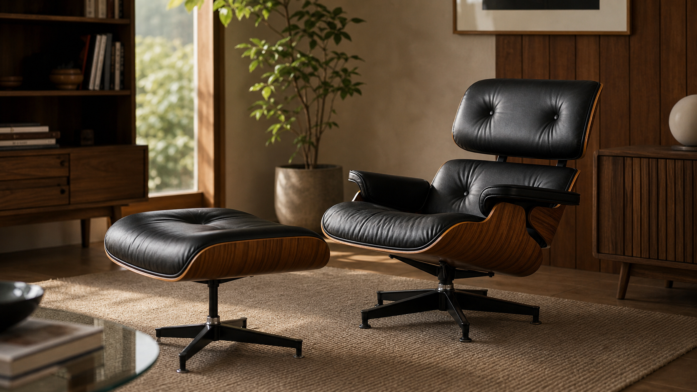

세계 가구 디자인 읽기: Eames Lounge Chair and Ottoman

요약 설명:
Charles & Ray Eames가 1956년에 발표한 Eames Lounge Chair and Ottoman은 몰드 합판, 가죽 쿠션, 안락함을 결합한 현대 가구의 대표작입니다. 이 글에서는 이 의자가 왜 고전이 되었는지 재료, 구조, 사용성의 관점에서 살펴봅니다.
검색 키워드:
- Eames Lounge Chair
- Eames Lounge Chair and Ottoman
- 찰스 레이 임스 라운지 체어
- 세계적인 가구 디자인
- 몰드 합판 가구
- 라운지 체어 디자인
좋은 의자는 몸을 편하게 해주는 물건입니다. 하지만 어떤 의자는 편안함을 넘어 한 시대의 생활 방식과 기술, 재료 감각을 함께 보여줍니다.
Charles & Ray Eames의 Eames Lounge Chair and Ottoman은 그런 가구 중 하나입니다. 1956년에 발표된 이 라운지 체어는 몰드 합판 쉘과 가죽 쿠션, 낮고 안정적인 자세를 결합해 현대적인 안락의자의 상징이 되었습니다.
이 의자를 볼 때 중요한 것은 유명한 이름이나 높은 가격만이 아닙니다. 왜 이 의자가 고전이 되었는지, 어떤 재료와 구조가 편안함을 만들었는지, 그리고 오늘의 가구 제작에서 무엇을 배울 수 있는지를 보는 일입니다.
부드러운 안락함을 현대적으로 만든 의자
Eames Lounge Chair는 전통적인 클럽 체어가 주던 깊고 포근한 안락함을 현대적인 재료와 구조로 다시 해석한 가구로 자주 설명됩니다.
기존의 안락의자는 크고 무거운 인상이 강했습니다. 반면 Eames Lounge Chair는 편안함을 유지하면서도 몰드 합판이라는 재료를 사용해 더 조형적이고 현대적인 형태를 만들었습니다. 나무 쉘은 단단한 구조를 만들고, 가죽 쿠션은 몸이 닿는 부분의 부드러움을 담당합니다.
즉 이 의자는 단단함과 부드러움이 분리되어 있으면서도 하나의 인상으로 묶여 있습니다.
몰드 합판이 만든 곡면
Eames 부부의 작업에서 몰드 합판은 중요한 재료입니다. 얇은 목재 단판을 겹쳐 접착하고, 압력과 금형을 이용해 곡면 형태로 만드는 방식입니다. 이 기술은 평평한 목재 판으로는 만들기 어려운 부드러운 곡선을 가능하게 했습니다.
Lounge Chair의 등받이와 좌판 쉘은 몸을 감싸는 듯한 곡면을 가집니다. 이 곡면은 단순히 보기 좋은 장식이 아니라, 앉는 자세와 시각적 부드러움을 함께 만듭니다.
목재는 직선만의 재료가 아닙니다. 가공 방식에 따라 곡면과 탄성을 표현할 수 있고, 그 결과 가구의 인상이 완전히 달라집니다. 이 점은 원목 가구를 보는 관점에도 좋은 힌트를 줍니다. 목재의 성질을 이해하면 형태의 가능성도 넓어집니다.
가죽 쿠션과 목재 쉘의 대비
Eames Lounge Chair의 인상은 목재와 가죽의 대비에서 많이 만들어집니다. 몰드 합판 쉘은 단단하고 구조적인 느낌을 주고, 두툼한 가죽 쿠션은 몸을 받아주는 부드러움을 만듭니다.
이 대비는 재료 선택이 얼마나 중요한지 보여줍니다.
- 목재: 구조, 곡면, 외곽선, 깊이감
- 가죽: 촉감, 안락함, 사용자의 몸과 직접 닿는 표면
- 금속 베이스: 회전과 지지, 현대적인 균형감
좋은 가구는 한 가지 재료만으로 완성되지 않을 때가 많습니다. 서로 다른 재료가 어떤 역할을 맡는지 분명할 때, 가구는 더 설득력 있는 형태가 됩니다.
오토만이 만든 휴식의 자세
이 의자는 라운지 체어와 오토만이 함께 구성됩니다. 오토만은 단순한 발받침이 아니라, 의자의 사용 경험을 완성하는 요소입니다.
등을 기대고, 몸을 조금 뒤로 넘기고, 다리를 올리는 자세는 일이나 식사의 자세와 다릅니다. 이 의자는 집중보다 휴식에 가까운 몸의 상태를 디자인합니다.
가구는 사람의 자세를 바꿉니다. 식탁은 몸을 앞으로 모으고, 책상은 시선을 집중시키며, 라운지 체어는 몸을 뒤로 놓게 합니다. Eames Lounge Chair는 이 점을 매우 분명하게 보여줍니다.
고급스러움은 재료만으로 생기지 않습니다
Eames Lounge Chair는 고급 라운지 체어로 잘 알려져 있습니다. 하지만 고급스러움은 비싼 재료를 사용했다는 사실만으로 생기지 않습니다.
고급스러움을 만드는 요소:
- 몸을 받치는 비율
- 목재 쉘과 쿠션의 균형
- 보이는 부분과 숨은 구조의 정리
- 재료가 만나는 부분의 디테일
- 오래 보아도 무너지지 않는 형태
이 의자는 사용자의 몸과 시선을 모두 고려합니다. 앉았을 때 편안해야 하고, 떨어져서 보아도 안정적이어야 합니다. 좋은 가구는 사용성과 형태가 따로 움직이지 않습니다.
목간의 시선으로 보는 Eames Lounge Chair
목간이 이 의자에서 배우고 싶은 점은 단순히 형태가 아닙니다. 중요한 것은 재료의 역할을 분명히 나누는 태도입니다.
식탁, 책상, 사이드 테이블은 라운지 체어와 용도가 다릅니다. 하지만 가구를 만들 때 던져야 할 질문은 비슷합니다.
- 몸이 닿는 부분은 어떤 촉감을 가져야 할까?
- 구조를 담당하는 부분은 충분히 안정적인가?
- 목재의 색과 결은 가구의 분위기와 맞는가?
- 사용자가 매일 어떤 자세와 동작으로 이 가구를 만날까?
Eames Lounge Chair는 편안함을 감각적으로만 말하지 않습니다. 재료, 곡면, 쿠션, 각도, 지지 구조가 함께 편안함을 만듭니다. 목간의 원목 가구도 이런 방식으로 생활의 동작을 살펴야 합니다.
유명한 디자인을 보는 태도
세계적인 가구 디자인을 소개할 때 중요한 것은 형태를 따라 하는 일이 아닙니다. 디자인의 질문을 읽는 것입니다.
Eames Lounge Chair가 던지는 질문은 분명합니다.
- 편안함은 어떤 구조에서 나오는가?
- 단단한 재료와 부드러운 재료는 어떻게 함께 쓰일 수 있는가?
- 고급스러움은 장식이 아니라 비율과 디테일에서 만들어질 수 있는가?
- 사용자의 몸은 가구 안에서 어떤 자세를 취하게 되는가?
이 질문은 오늘의 원목 가구에도 유효합니다. 좋은 가구는 보기 좋은 물건을 넘어, 몸과 생활을 오래 받아주는 구조여야 합니다.
참고한 자료
- Herman Miller,
Eames Lounge Chair and Ottoman공식 제품 자료 - Eames Office, Eames Lounge Chair 관련 자료
- MoMA Collection, Charles and Ray Eames 관련 소장 자료
- 몰드 합판 가구와 현대 가구 디자인사 관련 문헌